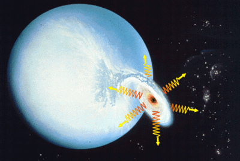

Credit: CXC/S. Lee
Stellar black holes, with masses less than about 100 times that of the Sun, comprise one of the possible evolutionary endpoints of high mass stars. Once the core of the star has completely burned to iron, energy production stops and the core rapidly collapses resulting in a supernova explosion. If the core is greater than about 2-3 solar masses (the maximum mass of a neutron star), the pressure of neutrons is unable to stop the collapse and a stellar black hole is formed. These black holes are generally modelled as Kerr black holes, as it is expected that the original rotation of the massive star would be conserved during the collapse, and that black holes contain little electric charge.
Since radiation cannot escape the extreme gravitational pull of a black hole once it crosses the event horizon, it is very difficult to discover one in isolation. Stellar black holes are therefore most easily found in X-ray binary systems, where gas from a companion star is being pulled into the black hole. X-rays are produced by this gas which is heated to tens of millions of Kelvin as it spirals towards the black hole via an accretion disk. Astronomers can also measure the mass of the black hole (typically between 3 and 20 solar masses for a stellar black hole) by observing its gravitational effect on the companion star.
There are currently around 20 X-ray binary systems that are thought to contain stellar black holes, though this number continues to climb as the sensitivity of instruments improves and more observations are made. Two of the best candidates (it is very difficult to unequivocally confirm a black hole) are LMC X-3 in the Large Magellanic Cloud and Cygnus X-1 (the first stellar black hole candidate) discovered in 1965.
See also: supermassive black hole.